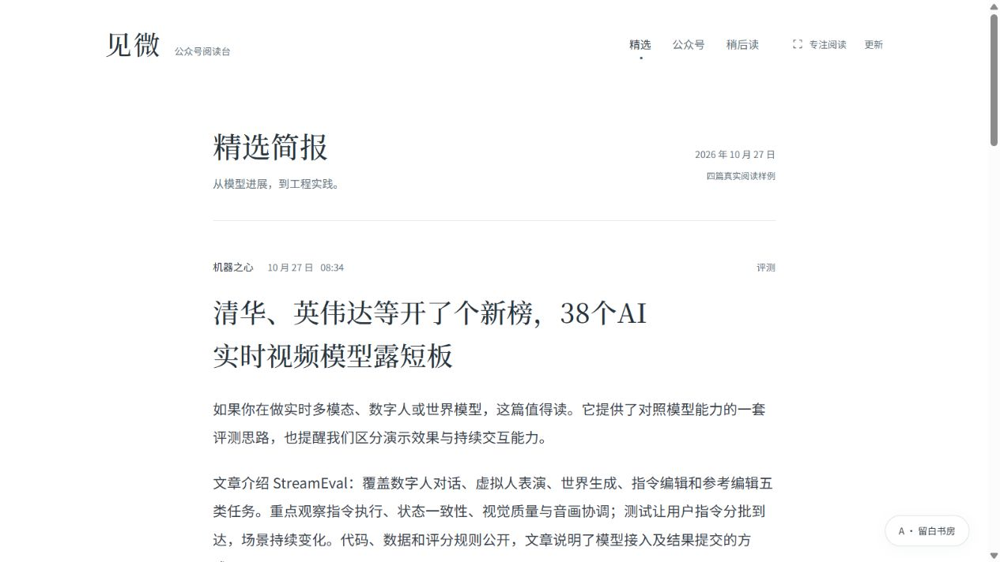
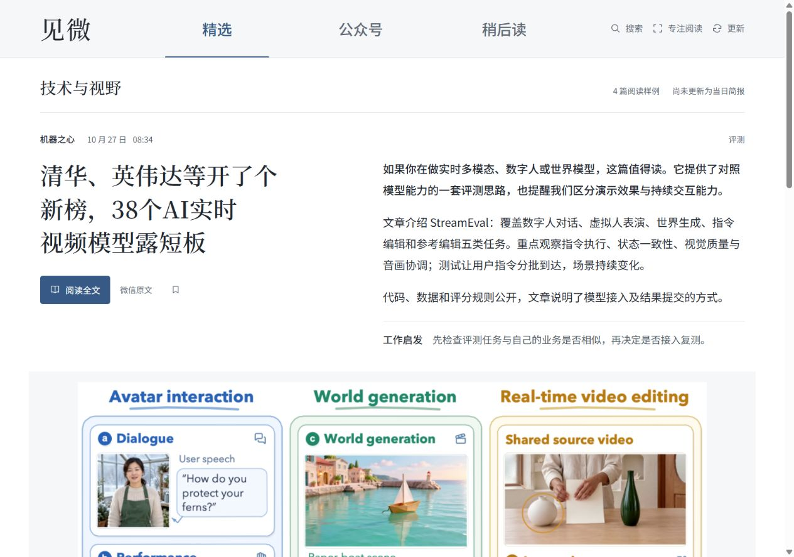
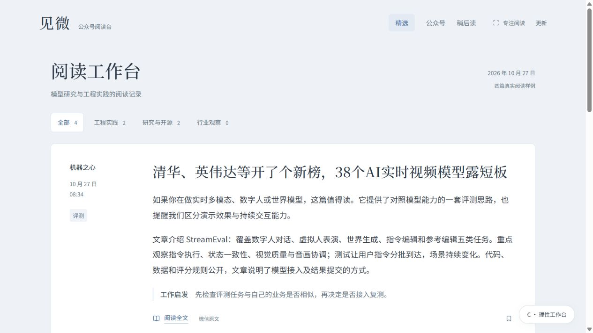

A
留白书房
把注意力交给文字。单一纵轴、舒展行距，适合认真读完一篇原文。
- 精选
- 账号信息在标题上方
- 公众号
- 目录长行，便于比较方向
- 全文
- 连续白面，安静而舒展
已采用 B：大横幅导航、沉浸全文与轻量交互。A、C 保留供比较。

把注意力交给文字。单一纵轴、舒展行距，适合认真读完一篇原文。

标题与完整简报错列，重要原图跨列。顶部大横幅与搜索、图表放大、续读，让阅读更连贯。

为日常浏览整理秩序。冷浅灰画布、连续内容面，按方向筛选后直接阅读简报。
B 进入当前主阅读台；A、C 的预览栏与全文「排版」面板保留方案切换。切到 B 时回到采用版。
三套共享收藏、阅读设置与原文；内容为原有四篇真实样例，尚未建立正式一周阅读库。
实屏调研了以下网站的内容页面，借鉴它们的层级与结构，并按中文长文阅读重新设计。
| 参考网站 | 观察 | 在阅读台中的转化 |
|---|---|---|
| Apple Newsroom | 统一大字级与图文内容面 | 标题层级、连续内容区域 |
| Kinfolk | 刊头与满幅摄影，主次清晰 | 期刊方案的大刊头与横跨网格的原图 |
| Works in Progress | 刊物分区与大图组织长文 | 来源分组与文章阅读节奏 |
| Stripe Blog | 左文右图，作者信息独立 | 错列标题／简报，来源元信息分层 |
| Linear Blog | 统一对齐、主题过滤与薄边界 | 工作台的筛选和连续简报面 |
| Linear Now | 搜索命令面板与即时结果 | B 的全库搜索、键盘选择和内容分层 |
| Aeon | 白色大菜单与大字号分类 | 三项直接可见的横幅导航 |
| The Creative Independent | 横向分类与独立筛选位置 | 导航与来源筛选分层 |
保留你的浅色、宋黑搭配与完整简报要求。原站的商业入口、暗色主题、营销动效与摄影素材不进入阅读台。
阅读初轮调研记录阅读 B 交互研究与优化记录